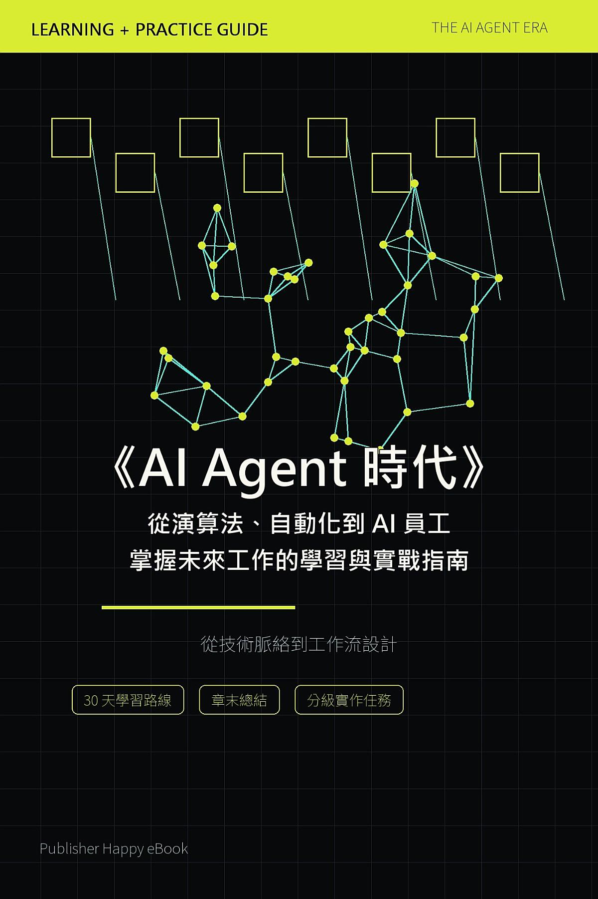

Google Play Books
《AI Agent 時代》從演算法、自動化到 AI 員工：掌握未來工作的學習與實戰指南
從技術脈絡到工作流設計，30 天學習路線、章末總結、分級實作任務

付費購買提供試閱版
《AI Agent 時代》從演算法、自動化到 AI 員工：掌握未來工作的學習與實戰指南
從技術脈絡到工作流設計，30 天學習路線、章末總結、分級實作任務
《AI Agent 時代》是一本引領讀者從演算法、自動化一路走向 AI 員工的學習與實戰指南。本書從技術脈絡出發，深入解析工作流設計，並規劃了 30 天學習路線、章末總結與分級實作任務，協助讀者在 AI Agent 時代掌握未來工作的核心競爭力。